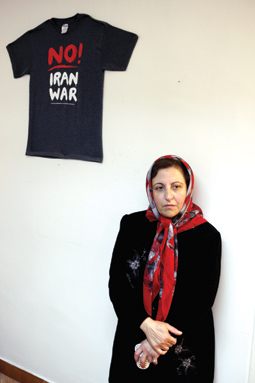

پذيرش > سایت نوشته ها > صلح و رفع تبعیض از زنان خواست مشخص ماست
 گفت و گو با شیرین عبادی گفت و گو با شیرین عبادی

 صلح و رفع تبعیض از زنان خواست مشخص ماست صلح و رفع تبعیض از زنان خواست مشخص ماست
16 آبان 1387 - کارگزاران / پروین بختیارنژاد - نسخه قابل چاپ
احضار و صدور قرار محكومیت برای بیش از 50 نفر از فعالان جنبش زنان و چگونگی فعالیت شورای ملی صلح و نیز برگزاری دهمین انتخابات ریاستجمهوری، بهانهای شد برای گفتوگو با دكتر شیرین عبادی. او خود را فقط وكیل دعاوی میداند و فعال حقوق بشر، مشروح گفتوگو با شیرین عبادی در پی میآید
مدتی است كه فشار روی فعالان جنبش زنان، خصوصا زنان فعال در كمپین یك میلیون امضا زیاد شده كه خود شما وكیل برخی از آنان هستید. بهنظر شما چرا روی فعالیت این زنان تا این حد حساس شدهاند و دیگر آنكه آیا از بعد حقوقی فعالیت كمپین غیرقانونی است؟
محتویات كمپین تعیین میكند كه فعالیت اعضای آن قانونی است یا خیر. به عنوان مثال اگر ما كمپینی ایجاد كنیم كه در مورد قاچاق مواد مخدر باشد، طبیعی است كه این كمپین غیرقانونی است. بنابراین قانونی یا غیرقانونی بودن كمپین، در رابطه با اهداف آن مشخص میشود. كمپین یك میلیون امضا خواستی مشخص دارد. خواست مشخص آن، بازنگری در قوانین بهمنظور رفع تبعیض از زنان است و یك چنین خواستهای نمیتواند غیرقانونی باشد. زیرا كه قوانین همواره، در هر كشوری قابل بازنگری و اصلاح هستند. این خواسته مشروع، بر حق و قانونی به مسالمتآمیزترین شیوه، یعنی به صرف گذاشتن یك امضا شروع شده و ادامه هم دارد. برخورد با فعالان در این كمپین مسلما غیرقانونی و برخلاف قوانین مصوب است. متاسفانه با وجود اینكه زنان مسالمتآمیزترین شیوه را برای اعتراض در پیش گرفتهاند، ولی همین وجه ملایم نیز مورد تحمل برخی از دادگاهها قرار نگرفته و با داوطلبان جمعآوری امضا برخورد شده. البته باید بگویم كه در موارد محدودی حكم تبرئه صادر شده و در غالب موارد متاسفانه احكام محكومیت صادر شده كه در مرحله تجدیدنظر است. در دادگاهها این افراد را متهم به اخلال در نظم عمومی كردهاند. این اتهام همه فعالان كمپین است. برخی هم اتهام نشر اكاذیب و اخلال در نظم عمومی و اقدام علیه امنیت ملی به اتهامات آنان اضافه شده و عمدتا در قبال یك شیوه مسالمتآمیز با سه اتهام مواجه هستیم.
اما اینكه چرا از دو سال اخیر برخورد با زنان شدت گرفته، باید بگویم كه از عمر كمپین، بیش از یك سال و نیم نمیگذرد. در 5 سال پیش چنین برخوردی با زنان نداشتیم. اقدام علیه امنیت ملی، تعریف مشخصی دارد و بههیچ وجه شامل مواردی چون تقاضای بازنگری در قوانین عادی یا قانون اساسی نمیشود. فعالان سیاسی و اجتماعی میتوانند تقاضای بازنگری در قانون اساسی را هم بكنند. زیرا در قانون اساسی پیشبینی شده كه در چه شرایطی میتوان درخواست اصلاح قانون اساسی را كرد. طرح این مسائل یك وجه حقوقی دارد و به هیچ وجه جرم محسوب نمیشود. مضافا به اینكه بعد از جمعآوری امضاها قرار بوده، علاوه بر سازمان ملل متحد، به مسوولان حكومتی و قوه قضائیه این امضاها ارائه شود. این یك نوع نظرخواهی از زنان است كه آیا از وضعیت حقوقی خود راضی هستند یا درخواست بازنگری در قوانین را دارند. در كجای دنیا یك چنین كاری جرم است. سوال من این است كه اگر یك زنی بگوید: «نمیخواهم هوو داشته باشم» اقدام علیه امنیت ملی كرده است! آیا این نظر باعث میشود كه آمریكا به ما حمله كند؟ بهنظر من پاسخ «نه» خواهد بود. یا در مورد «نشر اكاذیب»، اساسا در كمپین افراد یك برگه را امضا میكنند. بالای برگه سه، چهار مورد قانونی قید شده است. آیا بیان قوانین موضوعه، نشر اكاذیب است؛ اگر قانون بد است، باید اصلاح شود و اگر قانون خوب است، چرا از دانستن آن قوانین واهمه دارند. بنابراین مسلما نشر اكاذیب هم نیست. اخلال در نظم عمومی، آیا جمهوری اسلامی بعد از 30 سال تاسیس میتواند با یك امضا نظم آن به خطر بیفتد، مسلما خیر.
بنابر این میبینیم هیچ یك از این سه اتهام واجد جنبه حقوقی نیست. حقیقت این است كه نمیخواهند به خواسته ساده و كوچك زنان كه خواهان بازنگری در قوانین بهمنظور رفع تبعیض از زنان است، توجه كنند و بهجای آنكه گروههای كارشناسی تشكیل دهند، آمدهاند برای تعدادی از زنان، كه حدود 50 نفر هستند، كیفرخواست صادر كردهاند، كه امیدوارم در دادگاه تجدیدنظر، آنها تبرئه شوند و زنان ایرانی هم به خواسته خود كه تغییر قوانین است، برسند. توجه داشته باشیم كه بیش از 65 درصد از دانشجویان دانشگاههای ایران دخترند، پس نمیتوان با جامعهای كه چنین زنان آگاهی دارد با تبعیض برخورد كنیم. بهعنوان مثال در جرایم ما، جرمی در مورد زنان وجود دارد به نام «مساحقه» كه به معنای همجنسگرایی در میان زنان است و اصولا این جرم در جایی اتفاق میافتد كه زنان حضور دارند و مردان در آنجا نیستند. اثبات این جرم فقط با شهادت مردان میسر است. اینها حكایت از عدم توجه به بدیهیات در نوشتن قانون دارد. بنابراین این خواسته تغییر قوانین با هیچ معیار و منطقی جرم نیست.
ارزیابی شما از فعالیت گروههای مختلف زنان در اعتراض به ماده 23 لایحه حمایت از خانواده چیست؟
این اعتراض برخاسته از هویت انسانی زنان است. چگونه میتوان قبول كرد كه زنی حاضر باشد، خانه و كاشانهای كه در ساخت آن با مرد شریك بوده، آشیانه محبتی را كه با هم ساختهاند یكشبه ویران شده ببیند و بهخاطر تعدد زوجات كه در اسلام مجاز شمرده شده، منوط به ایفای عدالت است و حتی مسئله اجرای عدالت آنچنان كه در قرآن كریم آمده است: «اگر نمیتوانید و میترسید از اینكه قادر به اجرای عدالت نباشید، بنابر این نمیتوانید اقدام به تعدد زوجات كنید» بسیار خوشحالم كه نمایندگان مجلس شورای اسلامی، این ماده را حذف كردند.
اگر ماده 23 لایحه حمایت از خانواده مجددا مورد بررسی یا تصویب قرار گیرد، خود شما و جامعه زنان ایران چه برخوردی خواهید كرد؟
مجددا جامعه زنان به تلاطم در خواهند آمد و اعتراضات خود را پیگیری میكنند. زنان ایرانی نشان دادند كه به مهمترین مسئله زندگی خود یعنی «تعدد زوجات» نمیتوانند بیتوجه باشند.
در هفته گذشته، كلیات لایحه حمایت از حقوق كودكان در قوه قضائیه مورد بررسی قرار گرفت. بهنظر شما لایحه حمایت از حقوق كودكان باید دارای چه ویژگیهایی باشد كه بتواند حقیقتا از حقوق كودكان دفاع كند؟
پاسخ به این سوال مستلزم نوشتن یك كتاب است. محورهای چندی باید مورد توجه قرار گیرد. در درجه اول سن مسوولیت كیفری است. ما اگر میخواهیم كودكان و نوجوانان را مورد حمایت قرار دهیم، باید قبول كنیم كه عقل یك كودك 10 ساله با عقل یك زن 40 ساله برابر نیست.چطور میشود متصور شد كه سن مسوولیت كیفری در دختران 9 سال و در پسران 15 سال باشد.اگر میخواهیم كودكان و نوجوانان را مورد حمایت قانونی قرار دهیم، سن ازدواج را باید بالا ببریم. دختر 13 ساله به لحاظ بلوغ عقلی، آمادگی پذیرفتن مسوولیتهای زندگی را ندارد.ممكن است از لحاظ جسمی بتواند باردار شود، لیكن مسلما مادر خوبی نخواهد بود. بنابراین سن ازدواج دختران را باید بالا ببریم.مهمترین مسئله این است كه سن كودكی تا 18 سال افزایش داده شود. به همین دلیل باید برای كودكان قوانین خاص آنها را وضع كنیم.اساسا یك اماره قانونی وجود دارد كه تا یك سن مشخصی بلوغ عقلی انسان تكامل نمیپذیرد. این سن را روانشناسان، متخصصان تعلیم و تربیت و پزشكان سالها قبل تعیین كردهاند و آن، 18 سالگی است.
در مورد اعمال خشونتهای خانگی نسبت به اطفال، این لایحه چه قوانینی را باید تصویب كند؟
خشونتهای خانگی صرفا با قانون قابل مداوا نیست. بلكه نیازمند ابزاری فراتر از قانون، به نام فرهنگ است. اما قانون بهعنوان وسیلهای برای تحول فرهنگی میتواند مورد استفاده قرار بگیرد.متاسفانه در قوانین ایران به كودك بهعنوان موجودی مستقل و مخلوق خداوند نگاه نمیشود. كودك را در ارتباط با پدر و خاندان پدری میبینند و در این رابطه برای او حكم صادر میكنند. به هنگام قتل كودك بهدست پدر، پدر مشمول تخفیف در مجازات قرار میگیرد، آیا این برخورد با كودكان درست است؟ بهنظر من خیر.كودك متعلق به پدر نیست. كودك مخلوق خداوند بهعنوان موجودی مستقل است.قوانین و اصلاح قوانین در مهار كودكآزادی نقش بسزایی دارد.من امیدوارم این اصلاح قوانین توسط متخصصان انجام شود، منظورم از متخصصان هم فقط حقوقدانان نیستند بلكه جمعی متشكل از جامعهشناسان، روانشناسان، متخصصان تعلیم و تربیت، پزشكان و اولیا و مربیان هستند. مجموعه این هیات میتواند نظرات كارشناسی دهد كه چه قانونی حامی كودكان و نوجوانان است.
آیا اعدام كودكان و نوجوانان در سایر كشورهای اسلامی اجرا میشود؟
در كشور عربستان سعودی اجرا میشود ولی در كشورهای مراكش، تونس و مالزی اجرا نمیشود.
لطفا در مورد شورای ملی صلح قدری صحبت كنید، مدتی هم صحبت از غیرقانونی بودن آن به میان آمده بود.
طبق قانون اساسی تشكیل جمعیت و احزاب آزاد است، مشروط بر آنكه مخل مبانی اسلام و نظم عمومی نباشد. در كجای دنیا صحبت از صلح، نظم عمومی را بر هم میزند. اساسا ذات صلح در نام اسلام مستتر است. بنابراین تشكیل شورای ملی صلح نیازمند كسب مجوز از مراجع دولتی نیست. عدهای هرچند یكبار دور هم جمع میشوند و راههای تحكیم صلح را بررسی میكنند.آیا این كار اشتباهی است؟ آیا این فعالیت، به كسی ضربه میزند؟ آیا ما چراغ سبزی به دشمن نشان میدهیم؟ یا اینكه به دشمن هشدار میدهیم كه ملت ایران با جنگ و بمباران نظامی، بسیار مخالف است و متوجه باشید كه اگر دچار اشتباه شوید نهتنها با حكومت ایران بلكه با تكتك مردم ایران طرف خواهید شد.این فعالیت و تلاش باید مورد استقبال قرار گیرد نه اینكه در برخی از رسانههای دولتی، ما را غیرقانونی خطاب كنند، این در حقیقت شلیك به خود است.با بالا گرفتن تنشهای میان ایران و آمریكا و اسرائیل، بیم آن میرفت كه دشمن تصور كند میتواند به همان راحتی كه به عراق حمله كرده، به ایران هم حمله كند.ما بایستی به دنیا نشان میدادیم كه انتقاداتی در جهت نقض حقوق بشر و حكومت ایران داریم، اما بهبود وضعیت وظیفهای است بر عهده ما و هیچ ارتباطی به سربازان خارجی ندارد.ما با حمله نظامی یا حتی تحریم اقتصادی ایران مخالفیم، برای اینكه این مسئله وضعیت مردم را بهتر نخواهد كرد. ضمنا شورا تعریف خود را از صلح ارائه داده است. صلح به معنای نبود جنگ نیست.در قرن بیست و یكم اگر كشوری در جنگ نباشد آیا به منزله آن است كه در صلحبهسر میبرد كه خیر. در قرن بیست و یكم تعریف صلح آن است كه مجموعه شرایطی كه انسان میتواند به كرامت انسانی خود و با آزادی زندگی كند نشاندهنده آن است كه در صلح زندگی میكند. صلح با حقوق بشر پیوند مستمر دارد. صلح مجموعه شرایطی است كه حقوق بشر در آن رعایت شود و آرامش بر جامعه حاكم گردد.بدیهی است در شرایطی مثل شرایط كنونی عراق، هیچكس سخن از آزادی بیان یا حقوق زنان نمیكند، بلكه همه به فكر جانپناهی هستند كه خود را نجات دهند. جنگ باعث میشود كه مسئله حقوق بشر به فراموشی سپرده شود.شورای ملی صلح ضمن اخطار به كشورهای خارجی مبنی بر اینكه با جنگ مخالفیم، توجه کشور را به این مسئله جلب میكند كه خواهان احترام بیشتر به حقوق بشر است. احترام بیشتر به حقوق بشر، باعث همبستگی جامعه با مسوولان آن میشود.
در حال حاضر مهمترین دغدغه شما بهعنوان یك فعال حقوق بشر چیست؟
مهمترین دغدغه ذهنی من چه قبل از جایزه صلح نوبل و چه بعد از آن، ارتقای فرهنگ حقوق بشر و دموكراسی است. این دو مفهوم، دو واژه نیست، بلكه یك فرهنگ عمیق و ریشهدار در میان مردم است. فرهنگ جامعه در رعایت حقوق بشر و دموكراسی بسیار تعیینكننده است. زمانی كه رقیب دستراستی ژاك شیراك داشت انتخابات را به نام خود رقم میزد، مردم فرانسه به خیابانها ریختند و نگذاشتند كه او در انتخابات برنده شود. اما در جامعه دیگری میبینیم كه مردم از ظرفیتهای قانونی قوانین خود هم استفاده نمیكنند. بنابراین آنچه همواره اهمیت داشته، بالا بردن ظرفیت تحمل برای پذیرش دموكراسی و حقوق بشر بوده و این فرهنگ روز به روز اشاعه بیشتری پیدا كرده است، در سال 61، در برخی روزنامهها وقتی میخواستند به من فحاشی كنند، میگفتند: «ای فیمنیست، ای طرفدار حقوق بشر، ای لیبرال» آن موقع صحبت از حقوق بشر جرم بود، یك گناه بود به حقوق بشر میگفتند حقوق بشر غربی. اما اینك در اثر مقاومت مدافعین حقوق بشر، طرفداری از حقوق بشر یك ارزش اجتماعی شده. همه مدعی طرفداری از حقوق بشر هستند ولو اینكه بعضا ناقض آن هم هستند.
این مهمترین دستاورد طرفداران حقوق بشر است. از این به بعد فعالیت در این زمینه راحت است. زمانی كه قانون حمایت از زنان كه در سال 1346 تصویب شد و تعدد زوجات را موكول به شرایط سختی میكرد، در سال 1357 از بین رفت و هیچ اعتراضی از سوی زنان نشد. چرا، زیرا آن ارزشها ذهنی نشده بود و الان در سال 1387 دیدید، وقتی در مجلس حتی صحبت از تعدد زوجات شد، تحرك زنان چگونه بود. این بزرگترین دستاورد فعالیت من و طرفداران حقوقبشر است.
در رابطه با انتخابات ریاستجمهوری در ایران چه فكر میكنید؟ در حال حاضر در ایران شرایط خاصی داریم، گزینههای محدودی داریم و نیز گزینشهای محدودتری را در پی خواهیم داشت، ارزیابی شما از این شرایط چیست؟
باید بگویم كه ما گزینههای محدودی نداریم. محدودیت از آنجا شروع میشود كه قانون نظارت استصوابی حق انتخاب را از مردم میگیرد. بنابراین اولین شرط برای برگزاری یك انتخابات آزاد، سالم و عادلانه چه برای مجلس، ریاستجمهوری و شورای شهر حق انتخاب آزاد است. وقتی آزادی در انتخابات از مردم گرفته شود، سوال شما درست است. گزینههای اندكی باقی میمانند ولی برای اینكه گزینهها متعدد شود باید قانون نظارت استصوابی لغو شود.
اگر آزادی انتخاب به این زودیها محقق نشود چه؟
آنوقت نمیتوانیم ادعا كنیم كه انتخابات ما آزاد، سالم و عادلانه بوده زیرا در این صورت رقابت را از مردم دریغ داشتهایم.
اگر روزی زنان بتوانند در انتخابات ریاستجمهوری شركت كنند، شما كاندیدای ریاستجمهوری خواهید شد؟
هرگز. یادمان باشد هركس تخصصی دارد و بهتر است كه هركس سر جای خود باشد. سالهاست كه ما در ایران در تخصص خود كار نمیكنیم. من یك وكیل دعاوی هستم و مدافع حقوق بشر. امیدوارم كه بتوانم همواره در این زمینه كار كنم. سیاست، تخصص من نیست. اصولا مدافع حقوق بشر نباید وارد قدرت شود، باید در بین مردم بماند و سخنگوی مردم خاموش باشد. من داوطلب هیچ پستی در هیچ زمانی نخواهم بود.
کارگزاران
ارسال به
بالاترین
،
توییتر
،
فریندفید
،
فیسبوک
در همين بخش :
 یک خبر تلخ؟ یک قانونشکنی؟ یک تصمیم بخشنامهای جدید؟ یک خبر تلخ؟ یک قانونشکنی؟ یک تصمیم بخشنامهای جدید؟
چرا بایست به سکسوالیته پرداخت؟ / نفیسه آزاد
آزارجنسی خانگی؛ «قربانی» نه، «نجات یافته»
زنان، بزرگترین بازندگان بهار عرب
سانسور از دیدگاه جنسیتی/الهه امانی
ديگر بخش ها :
طرح یک میلیون امضا
|
مقالات
|
سایت نوشته ها
|
اخبار
|
گزارش كمپين
|
گفت و گو
|
علیه سکوت
|
كوچه به كوچه
|
نامه های شما
|
گزارش ویژه
|
گفتگو با اعضا
|
ویژه سالگرد کمپین
|
تصویر برابری
|
دل آرام علی
|
تریبون
|
مقالات
|
تاریخ شفاهی
|
خارج از چارچوب
|
کتابخانه
|
درباره کمپین
|
کمپین در شهرها
|
کمپین در بند
|
صدای تغییر
|
ویژه 22 خرداد
|
لایحه حمایت از خانواده
|
گالری
|
عشا مومنی
|
امیر یعقوبعلی
|
خدیجه مقدم
|
راحله عسگری زاده و نسیم خسروی
|
پروین اردلان،جلوه جواهری، مریم حسین خواه، ناهید کشاورز
|
زینب پیغمبرزاده
|
سعیده امین، سارا ایمانیان، محبوبه حسین زاده، ناهید کشاورز و همایون نامی
|
احترام شادفر
|
نسیم سرابندی زاده،فاطمه دهدشتی
|
وبلاگ مهمان
|
پرونده خرم آباد
|
دستگیری ها
|
مریم مالک
|
پرستو اللهیاری
|
مهرنوش اعتمادی
|
سمیه رشیدی
|
Other Languages
|
همراهان
|
«فراخوان کمپین ده روز با بهاره هدایت»
| English
|